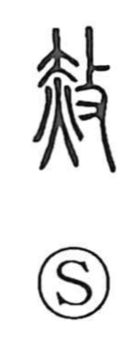

赦

Kun: yurusu | On: sha
pardon ・ forgive ・ remit
Explanation
赦 is a compound of 赤 and 攴. In Shirakawa’s reading, 赤 depicts a rite of purification: a human figure (大) with fire set beneath, a corrective ceremony performed to cleanse those tainted by wrongdoing. The addition of 攴 shows a hand gripping a branch used to strike in exorcistic discipline, the act of driving out and purifying offenses. Together the graph portrays the ritual remission of guilt—the basis of terms like 赦免—and hence comes to mean to remit or pardon a crime.